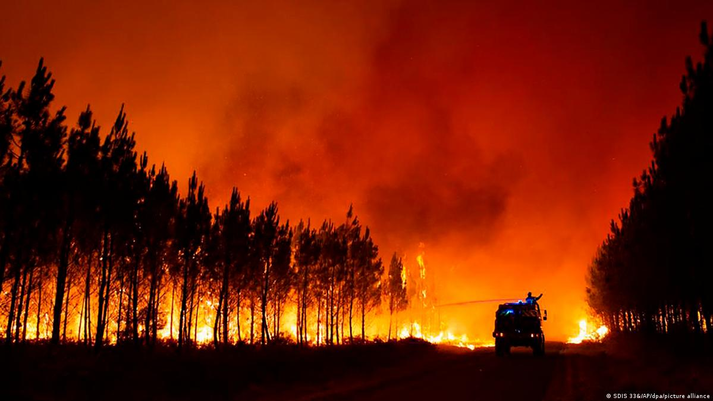

Kebakaran Hutan Ashdown di Inggris
Menurut laporan BBC, telah terjadi kebakaran pada Minggu 28 April 2019
di kawasan hutan yang sangat terkenal yaitu Ashdown.
Kebakaran hutan terjadi pada 21.30 waktu setempat di hari minggu,
kata Dinas Pemadam Kebakaran dan Penyelamatan East Sussex,
berdasarkan laporan BBC pada hari senin (29/4/2019).
Kawasan hutan yang terbakar diperkirakan mencapai 20 hektar area,
yang meliputi pohon dan semak belukar di kawasan Kingstanding.
Saat kebakaran terjadi, petugas pemadam kebakaran langsung siap siaga mendatangi tempat kejadian.
Petugas yang diterjunkan untuk menjinakkan si jago merah sebanyak 6 kru,
kemudian setelah beberapa titik api berhasil dijinakkan,
kru diperkecil menjadi 4 saja.
Andrew Gausden dari dinas pemadam memberikan tanggapannya terkait hal ini,
di mana kondisi hutan, terutama semak belukar dalam keadaan kering,
sehingga sangat mudah terbakar.